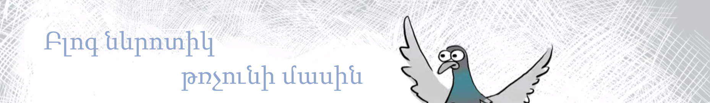
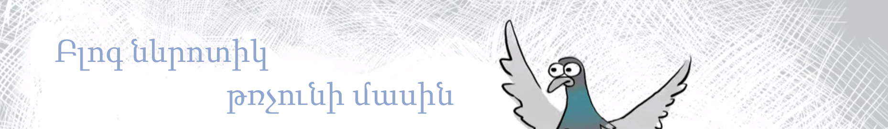

Ա - Ատամնաբույժ
Դ - ԴոյԴոյ
Դ - Բարև Ձեզ, բժիշկ։
Ա - Բարև Ձեզ։
Դ - Բժիշկ, կարո՞ղ եք բուժել իմ ատամները։
Ա - Ըմմ, բայց Դուք չունեք ատամներ։
Դ - Էէ, բժիշկ, էդքան մարդ եմ տեսնում գնում են եկեղեցի, որ բուժեն հոգիները, բայց չունեն հոգի։ Չե՞մ կարող ես նույն կերպով բուժեմ ատամներս։
Ա - Չէ, ախր հոգին ու ատամը նույնը չեն։
Դ - Բժիիիիշկ, իրենք ախր բուժում են։ Ես էլ ուզում եմ տենց։ Հավասարություն եմ պահանջում։
Ա - Ախր դու ԴոյԴոյ ես, ատամներ չունես։ Հնարավոր չի բուժել էն բանը, որը չկա։
Դ - Բժիշկ, ասում եմ, չէ՞..էն մարդիկ գնում են, փող տալիս, մեղքերն են մաքրում ու բուժում հոգիները։ Ես էլ ուզում եմ՝ լեզուս մաքրեք ու բուժեք ատամներս։
Ա - Հա, լավ..ի՞նչ գիտեք, որ հոգի չունեն։
Դ - Բժիշկ, Դուք ի՞նչ գիտեք, որ ես ատամներ չունեմ։
Ա - Դե տեսնում եմ, որ չկան։
Դ - Ես էլ տեսնում եմ, որ հոգի չկա։
Ա - Ախր հոգին չի կարելի աչքով տեսնել։
Դ - Հը՞։ Բա ո՞նց։
Ա - Մարդու հետ պետք ա շփվել, ճանաչել, ու միշտ չի, որ Դուք կկարողանաք տեսնել իր հոգին։ Կարող ա Դուք չտեսնեք իր հոգին, բայց ուրիշ մեկը տեսնի իր մեջ մի տիեզերքի չափ հոգի ու ներաշխարհ։ Ուղղակի ես հիմա էստեղ ո'չ հոգևոր սպասավոր եմ, ո'չ էլ՝ հոգեբան։
Դ - Բժիշկ, իսկ Դուք հոգի ունե՞ք։
Ա - Ունեմ։
Դ - Այսինքն կարող եմ տեսնել Ձեր հոգին եթե ճանաչեմ Ձեզ։
Ա - Շատ հնարավոր ա։
Դ - Դե բերեք ճանաչենք իրար։
Ա - Ես դրա ժամանակը չունեմ, ես աշխատում եմ։
Դ - Էէ, բժիշկ, բեր ընկերություն անենք։
Ա - Չէ, ես դրա ժամանակը չունեմ, ոչ էլ՝ ցանկությունը։ Ես կարող եմ բուժել ատամները, էդ ա իմ գործը։
Դ - Դե, ուրեմն, բուժի։
Ա - Ախր...լավ, 20000 դրամ, ձե՞ռք ա տալիս։
Դ - Դե մի քիչ թանկ ա, բայց ատամների համար ու, ընդհանրապես, առողջության համար փող խնայել պետք չի։
Սկսի, բժիշկ։